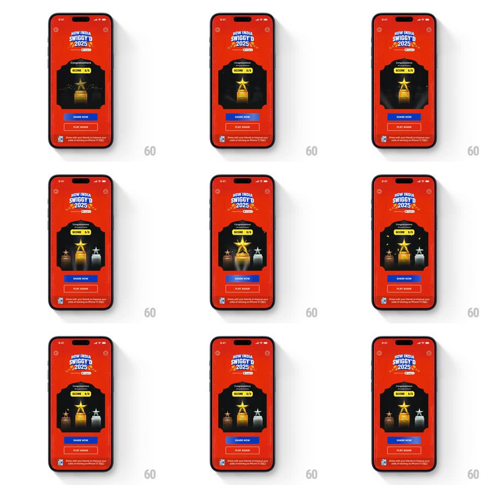

Media
Frame-by-frame

Rebuild this animation 1:1: Swiggy's "How India Swiggy'd 2025" all-levels celebration - the gold star trophy lands center and the bronze and silver trophies slide out from behind it under rotating rays, with SHARE NOW and PLAY AGAIN below.

Rebuild this animation 1:1: Swiggy's "How India Swiggy'd 2025" all-levels celebration - the gold star trophy lands center and the bronze and silver trophies slide out from behind it under rotating rays, with SHARE NOW and PLAY AGAIN below. ## Integration Integration: stack-agnostic spec - springs given as stiffness/damping, timed motions as duration + curve; map every value to your framework and animation library of choice. ## Scene Swiggy red screen: the "HOW INDIA SWIGGY'D 2025" badge, "Congratulations" with a lime "SCORE 5/5" pill, a dark alcove holding the trophies (gold star trophy center, bronze and silver flanking), light rays sweeping behind them, a blue "SHARE NOW" button, an outlined "PLAY AGAIN" button, and the iPhone-prize footnote. ## Motion spec Pattern: podium trophies sliding out from behind the gold trophy with rotating rays. - The alcove fades in (300ms) with the "Congratulations" headline and the SCORE pill popping (scale 0.8 -> 1.05 -> 1, spring ~400/14). - The gold trophy drops into center (translateY -30 -> 0, spring ~350/14, ~450ms) with a star sparkle at its peak (flare scale 0 -> 1 -> 0, 300ms). - 150ms later the bronze and silver trophies slide out from behind the gold (translateX outward ~90px each, 400ms ease-out, scale 0.85 -> 1) and settle on their podium spots, slightly lower. - Background rays rotate slowly the whole time (12s per turn) and a soft glow pulses behind the gold trophy (opacity 0.5 -> 0.8, 2s loop). - SHARE NOW rises and fills blue (translateY 16 -> 0, 250ms), PLAY AGAIN fades in 120ms later as an outline button. ## Calibration - The side trophies always read as behind-then-beside: they emerge from the gold trophy's silhouette, not from off-screen. - The rays are a continuous backdrop - they don't restart or stutter when the trophies move. ## Reduced motion All three trophies fade into their final positions (300ms); static rays. ## Don't miss - The score pill is lime green on red - the loudest small element on the screen. - The footnote (play all 3 levels to win an iPhone 17) stays legible at the bottom through the celebration.